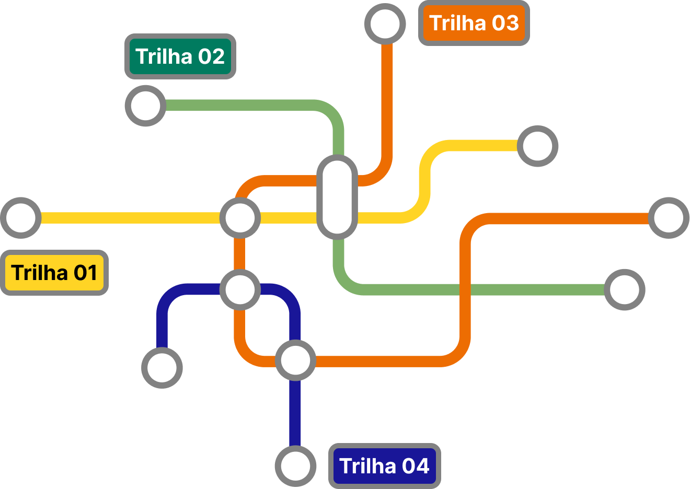

Trilha Educadora
O passaporte para uma
jornada de descobertas
em territórios educativos
O passaporte para uma jornada de descobertas em territórios educativos

Bem-vindo a Trilha Educadora!
Você já reparou como a aprendizagem acontece em muito mais lugares do que a sala de aula? Praças, bibliotecas comunitárias, museus, feiras, parques, centros culturais, iniciativas de bairro e movimentos sociais carregam histórias, linguagens e possibilidades formativas que atravessam o cotidiano – e podem ganhar sentido pedagógico quando o educador aprende a ler esses espaços como territórios educativos.
Este Recurso Educacional Aberto (REA) foi criado para convidar você a percorrer uma trilha formativa semana a semana, explorando diferentes tipologias de Educação em Espaços Não Formais. A proposta é simples e exigente: visitar (presencialmente ou de modo virtual), observar com intencionalidade, mediar sentidos, registrar pistas de aprendizagem e projetar desdobramentos para a Educação Infantil e o Ensino Fundamental I.
Sua missão
Agora é hora de caminhar!
Escolha um espaço (ou tour virtual) indicado na trilha da semana.
Realize a visita com olhar investigativo e sensível ao território.
Preencha seu passaporte: onde foi, o que observou e como isso vira proposição pedagógica.
Ao concluir a trilha, você recebe o carimbo da semana — mais um passo na sua jornada.
Como observar: critérios que orientam o seu olhar
Intencionalidade
do espaço
qual é a proposta educativa (ou cultural) percebida?
Mediação
e linguagem
como o espaço convida à interação, à pergunta, à escuta e à participação?
Território e
cidadania
que marcas de história, cultura, desigualdade, memória e pertencimento aparecem?
Inclusão e
acessibilidade
que públicos conseguem participar plenamente? Que barreiras permanecem?
Evidências
de aprendizagem
que sinais indicam curiosidade, diálogo, investigação, cooperação e autoria?
Desdobramento
escolar
como essa vivência pode retornar à escola como problema, projeto ou sequência?
Prepare-se para descobrir que educar também acontece quando a cidade, a cultura e o cotidiano viram matéria de leitura, escuta e criação pedagógica.
Vamos começar nossa trilha?
Iniciar Jornada